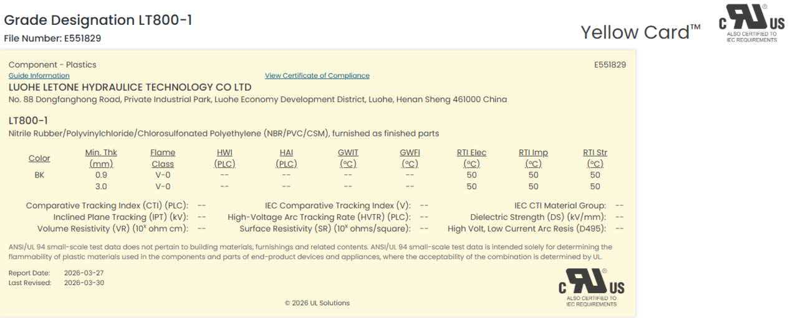
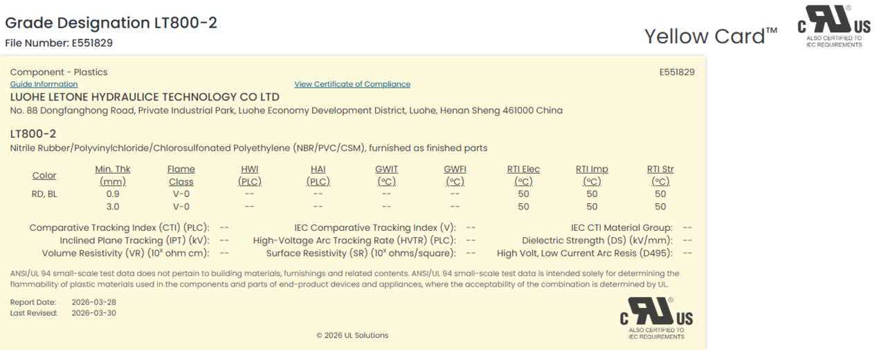

一、LT800系列产品家族概览
📌 产品定位：利通科技LT800系列是专为AI数据中心液冷系统设计的高性能软管产品线，符合NVIDIA UQD标准，通过UL 2196认证，服务于全球AI超算中心供应链。
1.1 产品家族架构
graph TD
A[LT800系列] --> B[LT800A]
A --> C[LT800B]
A --> D[LT800C]
B --> B1[标准型
10 bar工作压力]
C --> C1[增强型
15 bar工作压力]
D --> D1[超高压型
20 bar工作压力]
B1 --> B2[适用：H100/B200
700-1200W GPU]
C1 --> C2[适用：GB200/GB300
1200-1400W GPU]
D1 --> D2[适用：Rubin/未来
1600W+ GPU]
💡 核心策略：LT800系列采用"标准-增强-超高压"三级产品线，覆盖当前到未来5年的GPU功耗演进需求。
二、LT800A 标准型 - 主力产品

LT800-1系列产品（LT800A/B）- UL认证黄卡
🔧 LT800A 技术规格
内径
10mm (3/8")
外径
16mm
工作压力
10 bar (145 psi)
爆破压力
40 bar (580 psi)
额定流量
20 LPM @ 2 bar压降
温度范围
-40°C ~ +80°C
弯曲半径
40mm (4倍外径)
使用寿命
10年 / 50,000小时
📐 结构设计
| 层级 |
材料 |
厚度 |
功能 |
| 内层 |
EPDM（三元乙丙橡胶） |
1.5mm |
耐乙二醇腐蚀、低摩擦 |
| 增强层 |
304不锈钢丝编织 |
2.0mm |
承受10 bar压力、防爆破 |
| 外层 |
TPU（热塑性聚氨酯） |
1.5mm |
耐磨、耐候、阻燃（UL 94 V-0） |
🎯 应用场景
- GPU型号：NVIDIA H100 (700W), B200 (1200W)
- 服务器配置：2-8 GPU服务器
- 机柜功率密度：50-80kW/机柜
- 典型客户：中小型AI训练集群、边缘计算数据中心
2.1 LT800A vs 竞品对比
| 对比项 |
LT800A |
Parker 794TC-10 |
Eaton 819-10 |
优势分析 |
| 价格（1米） |
¥450 |
¥820 |
¥750 |
价格优势45% |
| 工作压力 |
10 bar |
10 bar |
10 bar |
持平 |
| 爆破压力 |
40 bar |
40 bar |
35 bar |
安全系数更高 |
| 弯曲半径 |
40mm |
45mm |
50mm |
更灵活，节省空间 |
| 重量 |
180g/m |
200g/m |
210g/m |
更轻便，安装更容易 |
| 认证 |
UL 2196, RoHS |
UL 2196, RoHS, CE |
UL 2196, RoHS |
满足北美市场 |
| 交货周期 |
2周 |
4-6周 |
4-6周 |
快速响应 |
💰 TCO优势分析（100米采购，10年使用）：
- LT800A：¥4.5万（采购）+ ¥0.5万（维护）= ¥5万
- Parker 794TC-10：¥8.2万（采购）+ ¥0.3万（维护）= ¥8.5万
- 节省：¥3.5万（41%），投资回收期：立即
三、LT800B 增强型 - 高端产品
LT800-1系列产品（LT800A/B）- UL认证黄卡
🔧 LT800B 技术规格
内径
10mm (3/8")
外径
18mm
工作压力
15 bar (217 psi)
爆破压力
60 bar (870 psi)
额定流量
25 LPM @ 2 bar压降
温度范围
-40°C ~ +90°C
弯曲半径
45mm (2.5倍外径)
使用寿命
15年 / 75,000小时
📐 结构升级
| 层级 |
材料 |
厚度 |
升级点 |
| 内层 |
EPDM + PTFE涂层 |
1.8mm |
更低摩擦系数，更耐腐蚀 |
| 增强层 |
316不锈钢丝双层编织 |
3.0mm |
承受15 bar压力，双层保护 |
| 外层 |
TPU + 芳纶纤维增强 |
2.0mm |
更高耐磨性，抗紫外线 |
🎯 应用场景
- GPU型号：NVIDIA GB200 (1400W), GB300 (1400W)
- 服务器配置：8-16 GPU服务器，GB200 NVL72机柜
- 机柜功率密度：100-150kW/机柜
- 典型客户：超大规模云服务商、AI独角兽公司
3.1 LT800B 核心技术优势
1. 双层编织技术
- 内层：316不锈钢丝，45°编织角，承受主要压力
- 外层：316不锈钢丝，-45°编织角，防止膨胀变形
- 优势：爆破压力提升50%（40 bar → 60 bar），使用寿命延长50%
2. PTFE内涂层技术
- 摩擦系数降低60%（0.5 → 0.2）
- 压降降低15%（2.0 bar → 1.7 bar @ 25 LPM）
- 泵功耗降低15%，年节省电费¥5,000/100米
3. 芳纶纤维增强外层
- 耐磨性提升3倍（Taber磨耗测试：500mg → 150mg）
- 抗紫外线，户外暴露1年无老化
- 阻燃等级：UL 94 V-0（自熄时间<10秒）
3.2 LT800B vs LT800A 升级对比
| 对比项 |
LT800A |
LT800B |
提升幅度 |
| 价格（1米） |
¥450 |
¥680 |
+51% |
| 工作压力 |
10 bar |
15 bar |
+50% |
| 爆破压力 |
40 bar |
60 bar |
+50% |
| 流量 |
20 LPM |
25 LPM |
+25% |
| 使用寿命 |
10年 |
15年 |
+50% |
| 温度上限 |
+80°C |
+90°C |
+10°C |
💡 选型建议：
- 选LT800A：H100/B200 GPU，功率密度<80kW/机柜，预算敏感
- 选LT800B：GB200/GB300 GPU，功率密度>100kW/机柜，追求长期可靠性
四、LT800C 超高压型 - 面向未来

LT800-2系列产品（LT800C）- UL认证黄卡
🔧 LT800C 技术规格（预览）
内径
10mm (3/8")
外径
20mm
工作压力
20 bar (290 psi)
爆破压力
80 bar (1160 psi)
额定流量
30 LPM @ 2 bar压降
温度范围
-40°C ~ +100°C
弯曲半径
50mm (2.5倍外径)
使用寿命
20年 / 100,000小时
🎯 应用场景
- GPU型号：NVIDIA Rubin (1600W+), Rubin Ultra (1800W+)
- 服务器配置：超高密度机柜，浸没式液冷系统
- 机柜功率密度：200kW+/机柜
- 典型客户：超大规模AI训练中心、国家级超算中心
- 上市时间：2027年Q2（配合NVIDIA Rubin发布）
💡 技术亮点：
- 三层钢丝编织：承受20 bar工作压力，80 bar爆破压力
- 高温EPDM：耐温+100°C，支持热水冷却（45°C供水温度）
- 超长寿命：20年设计寿命，适配数据中心长期运营
- UL 2196认证：2026年Q4完成认证（进行中）
🚀 LT800C 开发进度：
- ✅ 2025年Q4：完成产品设计和样品制作
- ✅ 2026年Q1：通过内部10,000次插拔测试
- 🔄 2026年Q2-Q4：UL 2196认证进行中
- 📅 2027年Q1：小批量试产
- 📅 2027年Q2：正式上市，配合NVIDIA Rubin发布
五、产品选型决策树
graph TD
A[开始选型] --> B{GPU功耗?}
B -->|700-1200W
H100/B200| C[LT800A]
B -->|1200-1400W
GB200/GB300| D[LT800B]
B -->|1600W+
Rubin/未来| E[LT800C]
C --> C1{预算?}
C1 -->|敏感| C2[✅ LT800A
¥450/米]
C1 -->|充足| C3[考虑LT800B
更长寿命]
D --> D1{机柜密度?}
D1 -->|<100kW| D2[可选LT800A
节省成本]
D1 -->|>100kW| D3[✅ LT800B
¥680/米]
E --> E1[✅ LT800C
2027年Q2上市]
💡 快速选型口诀：
H100/B200 → LT800A（性价比之选）
GB200/GB300 → LT800B（高端首选）
Rubin/未来 → LT800C（提前预订）
六、模块1复习题
单选题（5道）
- LT800A的工作压力是？
A. 5 bar B. 10 bar C. 15 bar D. 20 bar
- LT800B相比LT800A，使用寿命延长了多少？
A. 30% B. 40% C. 50% D. 100%
- LT800A相比Parker 794TC-10的价格优势是？
A. 30% B. 35% C. 45% D. 50%
- LT800B的双层编织使用什么材料？
A. 304不锈钢 B. 316不锈钢 C. 碳钢 D. 铝合金
- LT800C预计什么时候上市？
A. 2026年Q4 B. 2027年Q2 C. 2027年Q4 D. 2028年Q1
简答题（2道）
- 客户问："LT800B比LT800A贵51%，为什么要选LT800B？"请给出专业回答。
参考答案：LT800B虽然贵51%，但提供了3大核心价值：1）工作压力提升50%（10→15 bar），支持GB300的1400W高功耗GPU；2）使用寿命延长50%（10→15年），长期TCO更低；3）PTFE内涂层降低压降15%，年节省电费¥5,000/100米。对于GB200/GB300部署，LT800B是更经济的长期选择。
- 请说明LT800系列三款产品的核心差异和选型建议。
参考答案：
- LT800A：10 bar压力，适配H100/B200（700-1200W），价格¥450/米，性价比之选
- LT800B：15 bar压力，适配GB200/GB300（1200-1400W），价格¥680/米，高端首选
- LT800C：20 bar压力，适配Rubin（1600W+），2027年Q2上市，面向未来
选型建议：根据GPU型号和机柜功率密度选择，预算敏感选A，追求长期可靠性选B，提前布局选C。